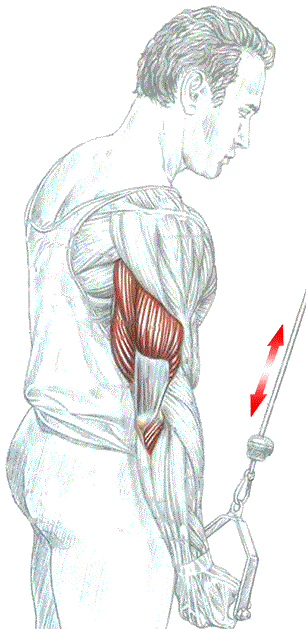

Разгибание одной руки с верхним блоком хватом снизу

Техника выполнения
Стоя лицом к тренажеру. Рукоятку держать одной рукой обратным хватом:
- сделать вдох и разогнуть руку;
- по окончанию движения сделать выдох.
Это упражнение прорабатывает преимущественно латеральную головку трицепса.
источник: "Анатомия силовых упражнений." Фредерик Делавье